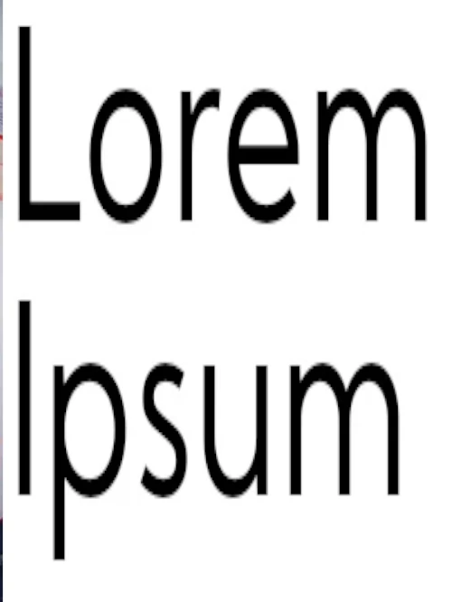

Nasza szkoła jest nowoczesną, przyjazną placówką, przygotowującą uczniów do kontynuowania nauki na
kolejnym etapie edukacyjnym. Działania szkoły ukierunkowane są na ucznia, jego potrzeby, umożliwiając mu
wszechstronny rozwój. Uczniowie naszej szkoły wyrosną na ludzi mających poczucie własnej wartości i
odpowiedzialności ze własne zachowanie.
Wykorzystujemy najnowsze zdobycze techniki informacyjnej i informatycznej, stosujemy nowoczesne metody
nauczania i wychowania, aby uczeń mógł rozwijać swoje zainteresowania, umiejętności, zdolności i pasje.
W pracy z uczniem kadra pedagogiczna podejmuje twórcze działania, które pozwolą realizować misję szkoły.
Nasi uczniowie będą świadomi nierozerwalnego współistnienia ze środowiskiem przyrodniczym, świadomi
własnego pochodzenia, dumni z bycia Polakami, Europejczykami i członkami swojej "małej ojczyzny". Będą
szanować kulturę i tradycję.
Szczególnie zadbamy o ich rozwój fizyczny, psychiczny i duchowy, aby w przyszłości propagowali zdrowy
styl życia i potrafili dokonać słusznego wyboru. Nasza placówka umożliwia nauczanie indywidualne w
szkole - jeśli nie ma przeciwwskazań lekarskich – Dzieciom, które mają takowe zalecenia. Dzięki temu
nasze Dzieci nie czują się wyobcowane, uczą się tolerancji i wzajemnej akceptacji.
Zespół Szkolno - Przedszkolny tętni życiem – organizujemy konkursy, imprezy okolicznościowe, spotkania z
ciekawymi ludźmi, wycieczki, zielone szkoły, dyskoteki, zabawy karnawałowe, przedstawienia na małej –
szkolnej i dużej scenie (jesteśmy częstymi bywalcami łódzkich i warszawskich teatralnych oraz kinowych
widowni), bierzemy aktywny udział w ogólnopolskich akcjach, np. WOŚP czy Góra Grosza.

Kładziemy duży nacisk na integrację z Rodzicami (głównie w klasach I-III). Organizujemy rodzinne
festyny, ostatni taki to „Czerwcówka 2007”. W czasie pozalekcyjnym Dzieci mają możliwość rozwijania
swoich zainteresowań i indywidualnych zdolności na kółkach (polonistyczne, matematyczne, plastyczne oraz
chór szkolny) oraz Szkolnym Kole Sportowym. Reprezentanci naszej szkoły z powodzeniem biorą udział w
konkursach i olimpiadach przedmiotowych oraz sportowych na szczeblu gminnym, powiatowym oraz
wojewódzkim.